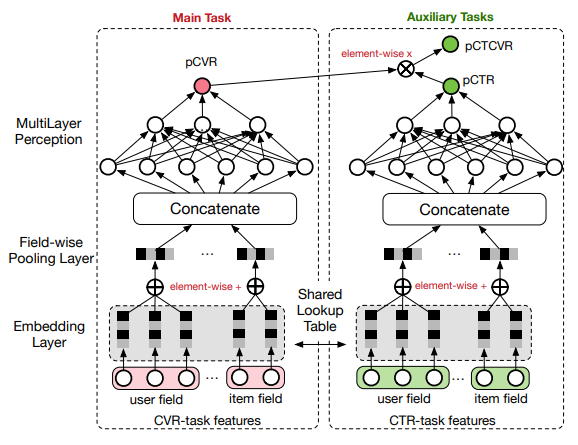

ESMM模型由阿里团队提出，原论文见链接。该模型针对传统的CVR预估的问题，提出了很有创见性的解决方法，并通过实验证明了该模型的效果。
CVR预估中的问题
一般来说，所有的浏览样本中，有过点击行为的样本只是其中很小的一部分，在CTR预估任务中，将样本中发生过点击行为的样本记为正例，反之记为负例进行训练模型，预测的时候也是在整个浏览样本集上进行预测。而CVR预估模型则不同，由于其预测的是发生点击行为的样本又发生转化行为的概率，所以其训练数据仅仅是发生过点击行为的数据，其中有转化行为的样本构成正例，反之构成负例。示意图如下图，由于发生点击行为的样本往往只占浏览样本中很小的一部分，所以CVR任务的一个挑战就是数据稀疏(Data Sparsity，简称DS)问题。此外，在预测转化率的时候又要用模型去预测所有浏览样本的转化率，于是就又带来了所谓的样本选择偏差(Sample Selection Bias，简称SSB)问题。

论文的解决方法
作者考虑到用户的行为的顺序依赖，只能先浏览，再点击，最后才能转化，即\(impression\rightarrow click\rightarrow conversion\)。有鉴于此，作者提出了Entire Space Multi-task Model(ESMM)。为了叙述的方便，记训练样本为
$$S= { (x _i,y _i \rightarrow z _i) }| _{i=1}^N$$其中\(x _i\)为样本特征，\(y _i\)和\(z _i\)都是标签，分别记录是否发生点击与转化。考虑到
$$\underbrace{p(y=1,z=1|x)} _{pCTCVR}=\underbrace{p(y=1|x)} _{pCTR}\times\underbrace{p(z=1|y=1,x)} _{pCVR}$$
作者将最终的模型分成两个子模型，分别输出pCTR和pCVR，与以往工作不同的是，作者没有直接用pCVR拟合\(z _i\)，而是将两个子模型的输出想乘得到pCTCVR，然后用pCTR和pCTCVR分别拟合\(y _i\)和\(y _i \& z _i\)。将pCVR作为模型的中间变量输出，整个模型可以使用所有的训练数据进行训练，因而很好的克服了前文提到的DS问题和SSB问题。
模型的结构为：

两个模型的Embedding曾共享参数，左侧的子模型的输出(pCVR)只作为中间变量，不直接参与到损失函数的计算，模型的损失函数为pCTR与\(y _i\)的交叉熵与pCTCVR与\(y _i \& z _i\)交叉熵之和，即
$$\mathcal{L} = \sum _{i=1}^N[loss(pCTR,y _i)+loss(pCTCVR,y _i \&z _i)]$$
ESMM的优势
- 可以使用浏览样本集进行训练，因而克服了SSB问题和DS问题。
- ESMM没有直接预测pCTR和pCTCVR，将二者相除得到pCVR，而是将pCVR作为模型的中间变量输出，可以确保输出的数值介于[0,1]，避免了除法可能带来的数值不稳定问题。